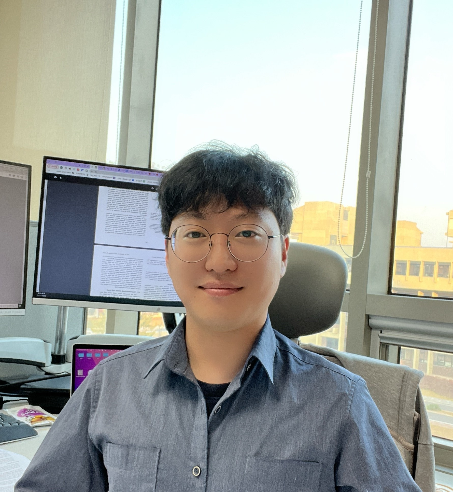

Youngsun Kwon [CV]
Researcher at ETRI
Email: youngsun.kwon 'at' etri.re.krAddress: 7-201, Autonomous UAV Research Section, ETRI, Daejeon, Korea
[GitHub] [Scholar]
Research Interests
Real-time occupancy mappingDeep learning for 3-D reconstruction
Sensor-based motion/path planning
Reinforcement learning-based navigation
Experience
2023. 01. -- present Researcher at Electronics and Telecommunications Research Institute (ETRI)2022. 03. -- 2022. 12. Postdoc at Korea Institute of Science and Technology (KIST)
Education
2016. 03. -- 2022. 02. Ph.D. candidate, School of Computing, KAIST (advisor: Sung-Eui Yoon)2014. 03. -- 2016. 02. M.S., Robotics Program, KAIST (advisor: Sung-Eui Yoon)
2010. 03. -- 2014. 02. B.S., Electronic & Electrical Engineering, Sungkyunkwan Univ.
2010. 03. -- 2014. 02. B.S., Computer Engineering (double major), Sungkyunkwan Univ.